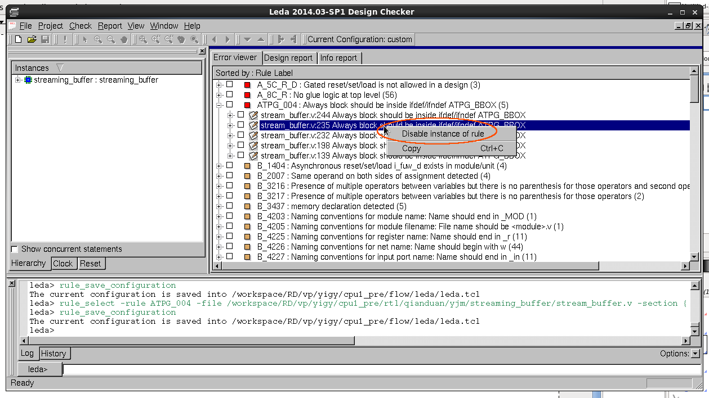

runner(pj)使用手册¶
初始化pj¶
利用module来加载pj：
$ module load pj
您也可以添加 module load pj 行到~/.cshrc将pj自动加载，module的详细用法可以参考 Tools工具配置
子命令参数模式¶
linux多参数tools基本都是子命令参数模式，如yum, apt-get, pip, git, svn等，这种参数模式的优点是将功能点按照子命令归类，模块化边界清晰。
以svn为例，我们可以通过 svn -h 来查看svn所有的子命令：
$ svn -h
usage: svn <subcommand> [options] [args]
Subversion command-line client, version 1.6.11.
Type 'svn help <subcommand>' for help on a specific subcommand.
Type 'svn --version' to see the program version and RA modules
or 'svn --version --quiet' to see just the version number.
Most subcommands take file and/or directory arguments, recursing
on the directories. If no arguments are supplied to such a
command, it recurses on the current directory (inclusive) by default.
Available subcommands:
add
blame (praise, annotate, ann)
cat
changelist (cl)
checkout (co)
cleanup
commit (ci)
copy (cp)
delete (del, remove, rm)
diff (di)
export
help (?, h)
import
info
list (ls)
lock
log
merge
mergeinfo
mkdir
move (mv, rename, ren)
propdel (pdel, pd)
propedit (pedit, pe)
propget (pget, pg)
proplist (plist, pl)
propset (pset, ps)
resolve
resolved
revert
status (stat, st)
switch (sw)
unlock
update (up)
Subversion is a tool for version control.
For additional information, see http://subversion.tigris.org/
其中从add开始到update都是svn的子命令，每个子命令负责一类特征明显的操作，比如checkout负责从svn code repo中取code到本地所有相关的操作，checkout的行为根据checkout后面跟的参数的不同而不同。
子命令checkout的参数可以通过 svn checkout -h 来查看：
$ svn checkout -h
checkout (co): Check out a working copy from a repository.
usage: checkout URL[@REV]... [PATH]
If specified, REV determines in which revision the URL is first
looked up.
If PATH is omitted, the basename of the URL will be used as
the destination. If multiple URLs are given each will be checked
out into a sub-directory of PATH, with the name of the sub-directory
being the basename of the URL.
If --force is used, unversioned obstructing paths in the working
copy destination do not automatically cause the check out to fail.
If the obstructing path is the same type (file or directory) as the
corresponding path in the repository it becomes versioned but its
contents are left 'as-is' in the working copy. This means that an
obstructing directory's unversioned children may also obstruct and
become versioned. For files, any content differences between the
obstruction and the repository are treated like a local modification
to the working copy. All properties from the repository are applied
to the obstructing path.
See also 'svn help update' for a list of possible characters
reporting the action taken.
Valid options:
-r [--revision] ARG : ARG (some commands also take ARG1:ARG2 range)
A revision argument can be one of:
NUMBER revision number
'{' DATE '}' revision at start of the date
'HEAD' latest in repository
'BASE' base rev of item's working copy
'COMMITTED' last commit at or before BASE
'PREV' revision just before COMMITTED
-q [--quiet] : print nothing, or only summary information
-N [--non-recursive] : obsolete; try --depth=files or --depth=immediates
--depth ARG : limit operation by depth ARG ('empty', 'files',
'immediates', or 'infinity')
--force : force operation to run
--ignore-externals : ignore externals definitions
Global options:
--username ARG : specify a username ARG
--password ARG : specify a password ARG
--no-auth-cache : do not cache authentication tokens
--non-interactive : do no interactive prompting
--trust-server-cert : accept unknown SSL server certificates without
prompting (but only with '--non-interactive')
--config-dir ARG : read user configuration files from directory ARG
--config-option ARG : set user configuration option in the format:
FILE:SECTION:OPTION=[VALUE]
For example:
servers:global:http-library=serf
例如我们想checkout svn上某个特定changelist，就可以利用-r参数 svn checkout URL -r CL ；不想让checkout的信息打印在stdout上就可以利用-q参数 svn checkout URL -q。
所以checkout子命令就只负责与checkout动作相关的所有操作，其他操作比如commit，merge会有其它子命令负责。
查看pj子命令¶
pj就是如上一段所讲的子命令参数体系，查看pj的全部子命令：
usage: pj [-h] {init,run,cov,vplan,reg,doc,clean,gen,leda,ac,dc,tm,fm} ...
positional arguments:
{init,run,cov,vplan,reg,doc,clean,gen,leda,ac,dc,tm,fm}
im sub cmd about running pj instance messager
init sub cmd about generating initial svn directories
run sub cmd about running simulation and regression
cov sub cmd about merging and analyzing coverage
vplan sub cmd about processing vplan
reg sub cmd about generating auto reg
doc sub cmd about generating natural docs
clean sub cmd about cleaning output
gen sub cmd about generating environments
leda sub cmd about leda flow
ac sub cmd about auto connect flow
dc sub cmd about run dc
tm sub cmd about parsing the timing report
fm sub cmd about run formality
icc sub cmd about run icc
cdc sub cmd about run cdc
optional arguments:
-h, --help show this help message and exit
目前pj的全部子命令有：
- im：负责启动pj内部即时通信工具
- init：负责版本控制初始化相关（新版带权限管控的svn repo不可用）
- run：负责simulation和regression相关，包括verdi
- cov：负责coverage收集与生成报告
- vplan：负责vplan生成与更新
- reg：负责autoreg
- doc：负责NaturalDocs生成
- clean：负责clean output以及可选目录的中间文件
- gen：负责模块级验证目录初始模板生成
- leda：负责leda flow
- ac：负责自动连线
- dc：负责dc flow
- tm：负责独立生成dc timing报告
- fm：负责formality flow
- icc：负责icc flow
- cdc: 负责cdc flow
pj子命令参数详细说明¶
子命令run¶
- 查看子命令run的全部参数：
$ pj run -h
- 列出一个module下全部case：
$ pj run -m MODULE -list- pj允许在proj trunk的任意dir下面跑，所以需要得到module name信息
- 跑module下面的所有case：
$ pj run -m MODULE -all
- 跑一个case：
$ pj run -m MODULE -c CASE
- 跑一个case（支持case命名的隐式规则）：
$ pj run -c CASE(MODULE__***)- 如果一个case name的第一个双下划线
__前面是module name，就无需通过-m指定module name
- 跑多个case：
$ pj run -c CASE1 CASE2 ...
- 只做c code compilation，不做rtl compilation：
$ pj run -m MODULE -cc
- 只compilation(analysis+elaboration)，不simulation：
$ pj run -m MODULE -comp
- 指定seed（*）：
$ pj run -c CASE -seed SEED
- random seed（*）：
$ pj run -c CASE -seed random
- dump波形（*）：
$ pj run -c CASE -wave
- dump mem（*）：
$ pj run -c CASE -wave mem
- 波形显示glitch（*）：
$ pj run -c CASE -wave glitch
- 打开verdi自动load波形：
$ pj run -c CASE -verdi
- dump波形之后打开verdi自动load波形：
$ pj run -c CASE -wave -verdi
- 没有tb，供desinger用verdi查看rtl：
$ pj run -m MODULE -verdi
- 用verdi设置断点，单步调试：
$ pj run -c CASE -gui
- 指定随机次数（*）：
$ pj run -c CASE -rt TIMES
- 带coverage的simulation（*）：
$ pj run -c CASE -cov- 会默认load vdb constraint file PROJ_MODULE/config/cov.filter
- 带效率分析报告的simulation（*）：
$ pj run -c CASE -prof time$ pj run -c CASE -prof mem
- 自定义tools options（*）：
$ pj run -c CASE -A ANA_OPTS$ pj run -c CASE -E ELAB_OPTS$ pj run -c CASE -S SIMU_OPTS$ pj run -c CASE -CC CC_OPTS- 分别在analysis, elaboration, simulation, c compilation几个阶段添加用户自己需要的tools的options
- 从头执行compilation与simulation的动作：
$ pj run -c CASE -fresh- 忽略之前compilation的结果，从头执行compilation阶段
- 生成fpga组相应的signal data数据（*）：
$ pj run -c CASE -fpga
- 指定regression类型kick off regression：
$ pj run -m MODULE -t REGR_TYPE1 REGR_TYPE2- regression模式下verbose信息不会打印在stdout上
- 不执行上一次simulation passed cases：
$ pj run -c CASE1 CASE2 -fm$ pj run -m MODULE -t REGR_TYPE1 REGR_TYPE2 -fm
- 打开x86指令自动生成开关，配置相关参数：
$ pj run -c CASE -x86_ins$ pj run -c CASE -x86_ins_num 48$ pj run -c CASE -x86_ins_groups ins_32_smoke_d0
（*）simv.cfg与case.cfg中如果配置了同样的功能，cmd中相同功能的参数可以去掉，都存在的情况下cmd args的优先级高
根据*标注的特点，我们可以将绝大部分的cmd args放到cfg里面来配置，cmd会被简化成统一的样式 $ pj run -c CASE 根据平台的这个特性，这里会有两种主要的工作方式：
- cfg based
- 平台的新特性
- cmd简单
- 可以同时kick off不同options的case
- 每个特殊case的配置不需要特别记录
- 可以对所有case全局控制analysis, elaboration, simulation各个阶段
- cmd args based
- 之前验证环境使用的比较传统的工作方式
- 每个case都用cmd args的方式来控制
- 学习成本低
大家可以根据自己的喜好来选择不同的工作方式，也可以各取所需，结合它们的特点混合使用
默认regression结束会在stdout上显示regression report table，并在output下生成rpt文件。完整的包括所有人，所有历史的report可以访问 http://172.51.13.205:8000/regr ，关于该report平台、platform server以及平台数据库请参考 backend构架介绍
子命令cov¶
- 查看子命令cov的全部参数：
$ pj cov -h
- merge一个模块的coverage：
$ pj cov -m MODULE -merge
- 生成coverage report：
$ pj cov -m MODULE -rpt- 会默认load vdb waiver PROJ_MODULE/config/*.el
- 利用verdi打开一个模块merge好的coverage：
$ pj cov -m MODULE -verdi- 会默认load vdb waiver PROJ_MODULE/config/*.el
子命令vplan¶
- 查看子命令vplan的全部参数：
$ pj vplan -h
- 自动生成或反标模块vplan目录下的vplan：
$ pj vplan -m MODULE -proc- 当模块vplan目录下没有vplan时，proc起到生成的作用
- 当模块vplan目录下有vplan是，proc起到反标的作用
- 指定case sheet的case抽取天数：
$ pj vplan -m MODULE -proc -d 5- 默认抽取jenkins帐号kick off regression 1天的结果
- case sheet的CL Ver会指定版本号范围
子命令reg¶
- 查看子命令reg的全部参数：
$ pj reg -h
- reg子命令功能开发中……
子命令doc¶
- 查看子命令doc的全部参数：
$ pj doc -h
- 利用NaturalDocs生成inline docs：
$ pj doc -m MODULE -gen
子命令clean¶
- 查看子命令clean的全部参数：
$ pj clean -h
- clean一个module的output下特定case：
$ pj clean -m MODULE -c CASE1 CASE2$ pj clean -c CASE（case命名满足隐式规则情况下）- 包括这个case的所有seed目录
- clean一个module的output下全部case：
$ pj clean -m MODULE -case- 包括多个case的所有seed目录
- clean一个module的coverage：
$ pj clean -m MODULE -cov- 包括merge的结果以及coverage reports
- clean一个module的output：
$ pj clean -m MODULE -output- 包括analysis、elaboration、simulation阶段的所有生成的文件以及所有case，请谨慎操作
- clean一个module的tb，并彻底revert到当前版本（主要用于清理x86指令集生成大量tests以及seqs）：
$ pj clean -m MODULE -tb
- clean一个module的config，并彻底revert到当前版本（主要用于清理x86指令集生成大量cfgs）：
$ pj clean -m MODULE -config
- clean一个module的output, tb, config，并彻底revert相关目录到当前版本：
$ pj clean -m MODULE -output -tb -config
pj将全部中间文件按类放置于PROJ_MODULE/output下，在了解这些分类目录的前提下，用rm也可以很方便的clean，目录结构功能细节请参考 平台目录结构
子命令gen¶
gen是方便用户生成相应的验证目录结构，运行pj的必须文件以及中心UVM template的子命令：
- 查看子命令gen的全部参数：
$ pj gen -h
- 生成模块的验证目录结构：
$ pj gen -m MODULE
- 指定相应的目录生成模块的验证目录结构：
$ pj gen -m MODULE -d MODULE_DIR- 没有指定目录的情况下会在verification下面生成-m指定参数的文件夹
子命令leda¶
leda是方便用户对相应的RTL进行是否符合特性规则的检查所用的工具：
- 查看子命令leda的全部参数：
$ pj leda -h
配置leda.cfg：
- 打开$PROJ_ROOT/flow/leda/leda.cfg文件完成配置
- 配置格式与case.cfg格式相同，详见 配置文件使用手册
- leda可变配置不多，默认不变也可以正常运行
- option log_directory_name
- 可以改变log目录的名称
- 默认是leda_logs
- option log_file_name
- 可以改变leda log的文件名称
- 默认是leda.log
- option error_string
- 可以调整检测leda报错的关键字符串
- 默认是[ERROR], [FAILURE]
使用pj跑leda flow：
对相应RTL进行leda check并生成log：
$ pj leda -gen_log -f FLIELIST -t LEDA_TOP- 需要提供RTL的filelist以及top模块名
指定特定的leda cfg或多个leda waiver对相应RTL进行leda check并生成log：
$ pj leda -gen_log -f FLIELIST -t LEDA_TOP -c LEDA_CFG -w LEDA_WAIVER- 需要提供RTL的filelist以及top模块名
- -c 为可选参数，可根据需求自己指定leda的cfg，默认为$PROJ_ROOT/flow/leda/leda.cfg文件
- -w 可以自行指定多个leda_waiver文件，添加的leda_waiver最终都会保存在leda.tcl文件中，原leda.tcl会备份为leda_<timestamp>.tcl
leda check过程中提供black box过滤功能：
$ pj leda -gen_log -f FLIELIST -t LEDA_TOP -bbf BB_FILELIST- 屏蔽掉相应bb_flielist中指定文件的leda check
- bb_filelist的书写规则与filelist书写规则相同，除了不支持-f递归查询
打开leda GUI查看、审查与修订leda log中相应的问题：
$ pj leda -gui- 打开GUI之后可以利用disable instance of rule来进行相应的review

子命令ac¶
ac是方便用户完成相应顶层例化自动连线的工具，主要利用emacs的verilog mode auto template：
- 查看子命令ac的全部参数：
$ pj ac -h
- 指定目录对目录以及子目录下面全部的*.ac.v自动连线生成*.v：
$ pj ac -d DIR- 原始文件*.ac.v每次生成都会自动覆盖掉之前的*.v
以下为一段*.ac.v的语法示例：
module top (/*AUTOARG*/);
input top__sub_a__s1;
input [3:0] top__sub_b__s2;
input [1:0] top__sub_a__asdfghjk;
output sub_b__top__s1;
/*AUTOREG*/
/*AUTOWIRE*/
sub_a #(/*AUTOINSTPARAM*/) sa1(// Custom Connections
.top__sub_a__ss1 (top__sub_a__asdfghjk),
/*AUTOINST*/);
sub_b #(/*AUTOINSTPARAM*/) sb1 (// Custom Connections
/*AUTOINST*/);
endmodule
// Local Variables:
// verilog-library-directories:("." "DIR_SUB_A" "DIR_SUB_B")
// End:
- 与正常verilog相同
- 端口命名规则为SRCMODULE__TARMODULE__SIGNAL(最初始端模块名__最终端模块名__信号名)
- ac工具会跟据/*AUTO*/类注释标志进行自动替换
- 文件结尾的注释不可少，在verilog-library-directories中要填该top需要例化连线的子模块目录，支持相对路径，否则ac工具无法获悉子模块的端口名
子命令dc¶
dc是方便用户完成相应RTL综合的基础自动化流程：
- 查看子命令dc的全部参数：
$ pj dc -h
配置dc.cfg：
- 打开$PROJ_ROOT/flow/dc/src/dc.cfg与$PROJ_ROOT/flow/dc/src/fm.cfg文件完成配置
- 配置格式与case.cfg格式相同，详见 配置文件使用手册
- dc的配置复杂，需要完成正确的配置才可以正确跑通，cfg文件中的DESIGN_NAME和DESIGN_LIST必须指定
- fm.cfg的配置是为了方便完成dc flow后面的自动化formality flow
- 具体dc.cfg与fm.cfg的每一项配置的目的可以咨询后端组 qianxf@cpu.com.cn
使用pj跑dc flow：
- 生成tcl文件，对相应RTL进行dc综合：
$ pj dc -gen_tcl -run- dc综合出来的output在$PROJ_ROOT/flow/dc_<timestamp>下面
- 只生成tcl文件：
$ pj dc -gen_tcl -s SRC- 命令只创建$PROJ_ROOT/flow/dc_<timestamp>目录生成tcl文件，不运行dc
- 生成出来的tcl output在$PROJ_ROOT/flow/dc_<timestamp>下面
- 指定特定的src目录，根据目录下的cfg与template生成tcl文件，并对相应RTL进行dc综合：
$ pj dc -gen_tcl -run -s SRC- -s为可选参数，指定一个包含cfg和temnplate的src目录，默认为$PROJ_ROOT/flow/dc/src
- 指定已存在的dc_<timestamp>目录，在该目录下利用已有的tcl文件对相应RTL进行dc综合：
$ pj dc -d DC_<timestamp> -run
- 对相应RTL进行dc综合(topo模式)：
$ pj dc -d DC_<timestamp> -run -topo或$ pj dc -gen_tcl -run -topo
- 对相应RTL进行dc综合，并自动生成文本格式的timing report：
$ pj dc -d DC_<timestamp> -run -tm或$ pj dc -gen_tcl -run -tm- 文本格式的按timing violation分布区间的归纳统计报告：$PROJ_ROOT/flow/dc_<timestamp>/reports/sum_tm
- 调整timing report的startpoint与endpoint的hierarchy层数：
$ pj dc -d DC_<timestamp> -run -tm -l 2或$ pj dc -gen_tcl -run -tm -l 2- -l level参数控制的是所需要统计的timing violation的startpoint与endpoint的hierarchy层数
- 默认level值为1
- 对相应RTL进行dc综合之后自动进行综合前后的formality check：
$ pj dc -d DC_<timestamp> -run -fm或$ pj dc -gen_tcl -run -fm- formality的output在$PROJ_ROOT/flow/dc_<timestamp>/fm_<timestamp>下面
利用pj跑dc flow每次的结果都会被我们收集的数据库中，同样也有一个web页面可以展示之前每个人kick off每个dc的结果统计，关于该report平台、platform server以及平台数据库请参考 backend构架介绍
子命令tm¶
tm是dc的附属子命令，目的是独立分析dc的timing report并生成文本格式的分布区间归纳统计报告：
- 查看子命令tm的全部参数：
$ pj tm -h
- 对相应的dc timing report进行分布区间归纳统计报告分析：
$ pj tm -f TIMING_REPORT- 生成的统计报告是TIMING REPORT同级的sum_tm
- 默认的level参数为1
- 改变默认的level参数
$ pj tm -f TIMING_REPORT -l 2
子命令fm¶
fm是方便用户完成独立的formality比对的基础自动化流程：
配置fm.cfg：
- 打开$PROJ_ROOT/flow/fm/src/fm.cfg文件完成配置
- 配置格式与case.cfg格式相同，详见 配置文件使用手册
使用pj跑fm flow：
- 提供ref与imp完成formality比对检查：
$ pj fm -ref REF_FILE -imp IMP_FILE -s SRC- REF_FILE与IMP_FILE都可以是独立的.v文件或者filelist文件
- -s为可选参数，用户可自行指定src目录，该目录下包含cfg文件和template，默认为$PROJ_ROOT/flow/fm/src目录
- fm比对出来的output在$PROJ_ROOT/flow/fm_<timestamp>下面
利用pj跑fm flow每次的结果也都会被我们收集的数据库中，请参考 backend构架介绍
子命令icc¶
icc是方便用户完成物理设计的自动化流程：
- 查看子命令icc的全部参数：
$ pj icc -h
配置icc.cfg：
- 打开$PROJ_ROOT/flow/icc/src/icc.cfg文件完成配置
- 配置格式与case.cfg格式相同，详见 配置文件使用手册
- 具体icc.cfg的每一项配置的目的可以咨询后端组 jiangz@cpu.com.cn
使用pj跑icc flow：
- 在指定的目录下运行icc的指定阶段：
$ pj icc -d ICC_<timestamp> -setup -fp -place -cts -route- 在ICC_<timestamp>目录下自动运行指定的icc的某一个或某几个阶段
- icc运行的结果保存在指定的目录ICC_<timestamp>下
- 在自动创建的新目录下运行icc的指定阶段：
$ pj icc -setup -fp -place -cts -route -gen_tcl -s SRC$ pj icc -gen_tcl -s SRC只创建$PROJ_ROOT/flow/icc/icc_<timestamp>目录后产生tcl，不运行icc- 自动创建$PROJ_ROOT/flow/icc/icc_<timestamp>目录，在该目录下运行指定的icc的某些阶段
- -s为可选参数，用来指定一个包含cfg、template和plug的src目录，默认为$PROJ_ROOT/flow/icc/src目录
- -s指定目录下的plug文件内容根据实际运行模块进行修改
- icc运行的结果保存在自动创建的目录$PROJ_ROOT/flow/icc/icc_<timestamp>下
- 在指定目录或新创建目录下运行icc所有阶段：
$ pj icc -d ICC_<timestamp> -all或$ pj icc -gen_tcl -all
子命令cdc¶
cdc是方便用户完成跨时钟域检查的基础自动化流程：
- 查看子命令icc的全部参数：
$ pj cdc -h
配置cdc.cfg：
- 打开$PROJ_ROOT/flow/cdc/src/cdc.cfg文件完成配置
- 其中的err_str是提供进行compile结果检查的标志字符
- 配置格式与case.cfg格式相同，详见 配置文件使用手册
配置waiver.cfg：
- 打开$PROJ_ROOT/flow/cdc/src/waiver.cfg文件完成配置
- section的名字为user name，表示用户check in的waiver，供cdc reviewer查看
- sp|ep必须按照startpoint|endpoint的格式给出，否则会给出warning
- type/startpoint/endpoint中均可以使用通配符*
使用pj跑cdc flow：
- 根据配置的flist和design top运行cdc：
$ pj cdc -s SRC- -s可以指定一个包含运行cdc需要的cfg和tcl的目录，默认为$PROJ_ROOT/flow/cdc/src
- cdc运行的结果保存在目录$PROJ_ROOT/flow/cdc/cdc_<timestamp>下
- cdc运行完后对cdc_detail.rpt进行检查，将沒有waive掉的Violation写入$PROJ_ROOT/flow/cdc/cdc_<timestamp>/post_waiver.rpt文件
平台目录结构¶
这里主要介绍和平台有关的目录结构
PROJ_ROOT/verification/MODULE¶
每个模块的主要工作目录
MODULE
├── c # 模块simulation所需要的c和asm文件
├── config # module.cfg, case.cfg, cov.filter, \*.el等文件
├── doc # NaturalDocs生成的doc
├── flist # rtl.flist, tb.flist
├── output # 所有仿真文件，临时文件，中间文件等不需要checkin的文件
│ ├── __c_lib__ # c和asm编译出来的库文件
│ ├── __cov__ # coverage相关文件
│ │ ├── cm # coverage数据
│ │ └── merge # coverage merge后的数据以及生成的report
│ ├── __simv__ # analysis+elaboration相关文件
│ │ ├── DEFAULT # DEFAULT simv compilation相关文件，包括生成的simv
│ │ ├── simv1 # simv1 simv compilation相关文件，包括生成的simv
│ │ └── simv2
│ └── module_sanity_test # module_sanity_test case相关文件
│ ├── 1 # 以seed命令的目录，在该seed下simulation相关文件
│ ├── 119974
│ ├── 205236
│ ├── 316245
│ ├── 370561
│ ├── 415104
│ ├── 563042
│ ├── 716947
│ ├── 753549
│ ├── 91185
│ └── 979315
├── reg # reg相关文件
├── upf # low power upf相关文件
├── tb # tb所有文件
└── vplan # vplan相关文件
每个新模块在已经有c与tb目录的情况下，只需要完成 config目录下的module.cfg和case.cfg 还有 flist目录下的rtl.flist与tb.flist 就可以调用pj了
开发阶段说明¶
pj目前还在开发阶段，以上列出的所有子命令包括参数以及目录结构只是开发计划中的一小部分，有些子命令已经基本完备，例如run, regr, cov，有些子命令还没有开始全面开发，例如reg，因此该手册也会根据pj的release定期更新，欢迎大家试用，如有任何问题及建议，请联系平台组 yigy@cpu.com.cn